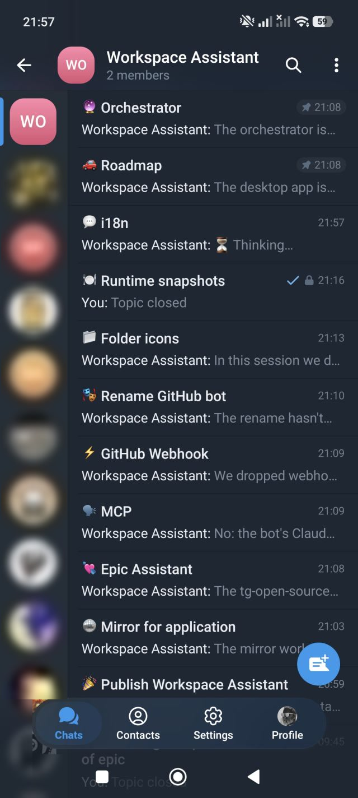
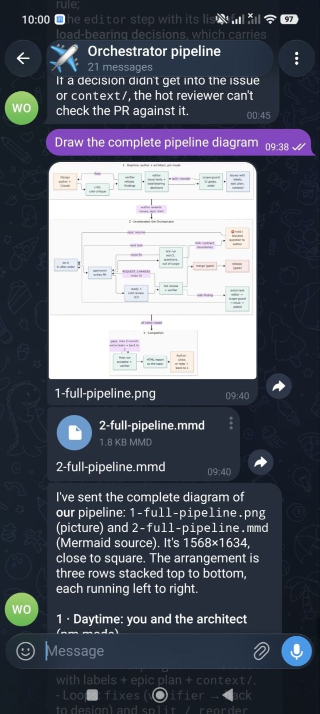
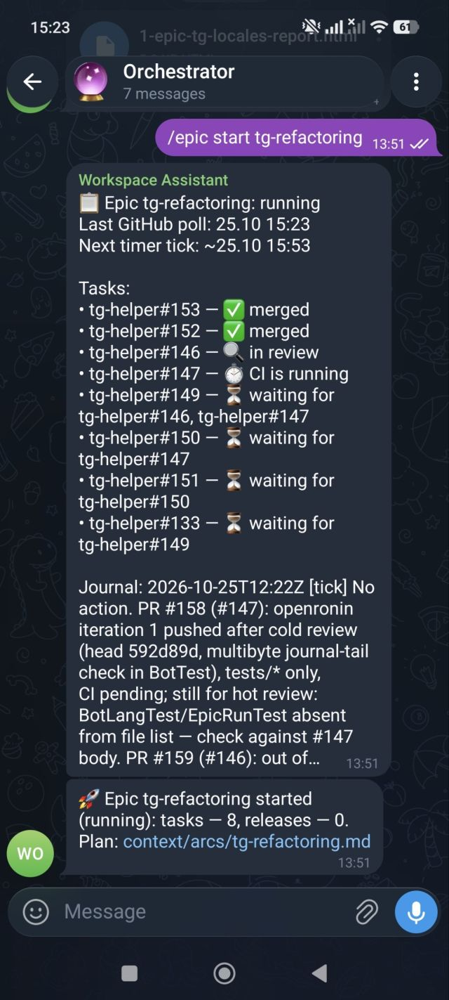
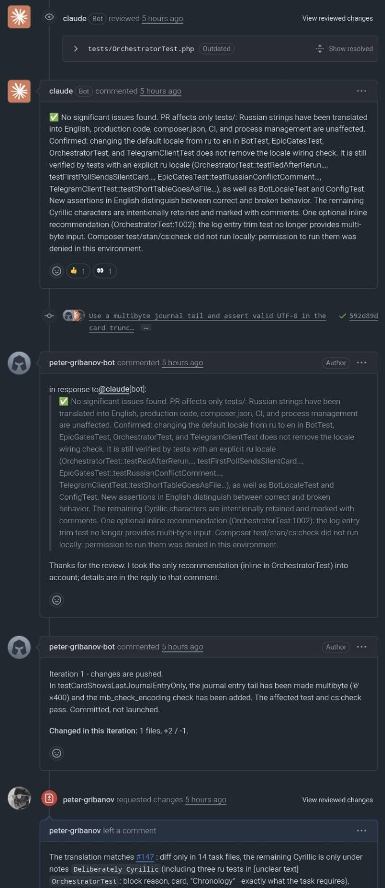

A knowledge base you edit from your phone
The bot works in a git repository of documents, the managed repository: notes,
decisions, plans, task texts. You write to the bot in Telegram; the message goes to
claude -p in the context of that repository, the changes are committed and pushed
automatically (unless AUTO_COMMIT=0), and the reply links to the commit.
Telegram ↔ bot ↔ claude -p ↔ git pushIt is meant for documents, not for a code base: nothing is reviewed before a push. Code lives in separate repositories, and changes there go through pull requests.

⚠️ Read this before you start the bot
- By default the bot starts Claude with
--dangerously-skip-permissions: no permission prompts, Claude executes whatever a message asks for — shell commands, file edits, network access,git push,ghcalls. - Everything runs with the rights of the system user that runs the bot and with that user's
ghtoken. - Anyone in
ALLOWED_USER_IDS(or who takes over such a Telegram account), and anyone who can influence the text Claude reads — repository files, issues, pull requests — can make the bot act as that user. - Isolate the process before you start it: a dedicated user without sudo, a narrow token, a container or VM.
Features
Sessions per chat
Every chat or forum topic is its own Claude session that continues between messages.
Commit and push
Clean-tree check and
git pull --rebasebefore a run, commit and push after it, a commit link in the reply. Off withAUTO_COMMIT=0.Queue, not rejection
A request that arrives while the bot is busy waits in a queue.
Live progress
The "Thinking..." message shows what Claude says and which tools it calls.
Files both ways
Send files to Claude; files Claude puts into the outbox come back to the chat.
Modes and epics
arch,reviewandpmmodes with replaceable personas, 13 interface languages, and epics of tasks the bot drives to completion.

Epics: from an idea to merged pull requests
Besides chatting with a repository, the bot can carry a set of tasks to completion. Claude handles
the steps that need judgement, the bot's Orchestrator handles the deterministic ones, an
external executor writes the code, and the author keeps the decisions that must stay human.
- ArchitectClaude in the
pmmode designs the change, runs it through cold critique, verification, editing and a scope check, and opens the issues. - Authorre-reads the tasks and sends
/epic start. - Implementeropenronin writes the code and opens pull requests; independent tasks run in parallel.
- Reviewan optional cold CI review, then a hot review against the intent of the task and the epic plan.
- Mergethe
Orchestratormerges, labels and releases, and stops a stuck epic. - Final checkverifies the whole epic and writes the report for the author.
Epics rely on openronin as the external executor. Regular chat with the bot does not need it.


13 interface languages
- English
- Русский
- Deutsch
- Español
- Français
- Português
- Українська
- Қазақша
- Oʻzbekcha
- हिन्दी
- 中文
- 日本語
- 한국어
- Interface (
BOT_LOCALE): bot texts, the command menu, the epic card and notices, and the comments and commit messages the bot composes. - Replies (
/lang): each user picks the language of Claude's replies in the chat. - English and Russian are maintained by the project; the other locales are machine translations,
provided as is. Add or override a language with your own locale files (
LOCALES_DIR).
GitHub and GitLab
GitHub is the default. With FORGE=gitlab the bot works with gitlab.com or, with
FORGE_HOST, a self-hosted instance, through the GitLab CLI glab.
Minimum versions: GitLab 16.0 and glab 1.40.
| Feature | GitHub | GitLab |
|---|---|---|
| Chat mode | supported | supported |
| PM mode | supported | supported |
| Review mode | supported | supportedverdict note with a marker; cold reviewer findings are not collected |
Epics (/epic) | supported | not supported |
Get started
You need PHP 8.4+, the Claude Code CLI, git with access to the repository's remote, and
gh (or glab for GitLab).